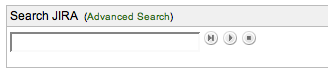

Created by Henri Yandell at SourceLabs, Inc..
Released under the Apache License 2.0 and Copyright 2007 SourceLabs, Inc.
This project uses the excellent famfamfam.com Silk icons.
This is a very simple portlet for the JIRA dashboard that provides an obvious search point for new users.
Its expected use case is to make it easier for new users to search for existing issues by providing a simpler search interface than the Find Issues page, and to provide a search system with less magic than the Quick Search.
It has the following functionality:
Version 1.0.1 was released on 13th of April 2007. It made it so the portlet appears for anonymous users.
Version 1.0 was released on 26th of March 2007.
Install the plugin by downloading the plugin jar, place it in your $JIRA/WEB-INF/lib/ and giving your JIRA a restart.
Once it's installed you can add it to your dashboard by selecting the Search Box portlet. Please follow the instructions from Atlassian for configuring your personal dashboard or the default dashboard.
The source is available for perusing by downloading the source zip and unpacking.
Please mail these to me at henri-at-sourcelabs.com, or add them as comments to the JIRA plugin page.
There's just the one screenshot, which you can also see at the top of the page:
All of the above said, I recommend that you investigate the Quick Search documentation. It's a powerful tool.